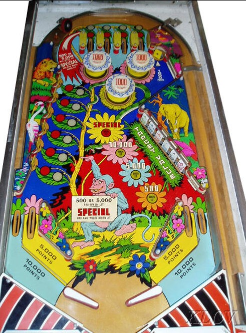

Wood's Queen also has 1- and 2-player versions, with slightly different scoring rules. Guides on those games will be added to this page at a later date.
Top lanes and left standup targets score 500 points when unlit, or 5,000 when lit white. Hit an unlit lane or target to light it white. Game settings or modifications may mean that some lanes and targets are tied together, so that making either one gives credit for both; at the copy often seen at Northwest Pinball Championships, the 3rd, 4th, 5th, and 6th targets (counting from bottom to top) correspond to the 1st, 2nd, 3rd, and 4th top lanes from left. Lighting all targets and lanes will cause one target or lane to be lit red, rotating every time the 1,000-point score reel moves. Standup targets or top lanes lit red score Special, which can be set to award a free game, an extra ball, or 50,000 points.
Right drop targets start each ball worth 500 points each. Completing the bank once increases the value of each drop target to 5,000. Completing the bank a second time scores a Special and increases the value of each drop target to 10,000 (the playfield art makes it look like 70,000, but it's definitely 10,000). Further completions of the drop targets on a ball score Specials but do not advance the drop target value further.
Pop bumpers and the top right standup target always score 1,000 points. Plunging or nudging into the 2nd or 3rd top lane from left whenever possible to try to get the ball to stay in the pop bumper nest for a longer time can be surprisingly effective for scoring.
Wood's Queen has a conventional in/out lane setup. In lanes score 5,000 points and out lanes score 10,000. There is a center post between the flippers; curiously, on some copies, the center post seems to be slightly closer to the left flipper than the right one. The flipper gap is quite wide for a game of this era. There is no end of ball bonus. All progress on the drop targets and left targets/top lanes is reset each ball.
Strategy: pick either drop targets or top lanes/bumpers, and stick to it. Try to advance the drop targets to 5,000 or 10,000 each, or go up top all day via the left channel next to the top lanes to try to score 5,000-point lit top lanes and lots of 1,000 point bumpers. The posts between the left standup targets make them deceptively difficult to shoot directly.
The below picture of Wood's Queen's playfield can be found at https://www.arcade-museum.com/Pinball/woods-queen.
